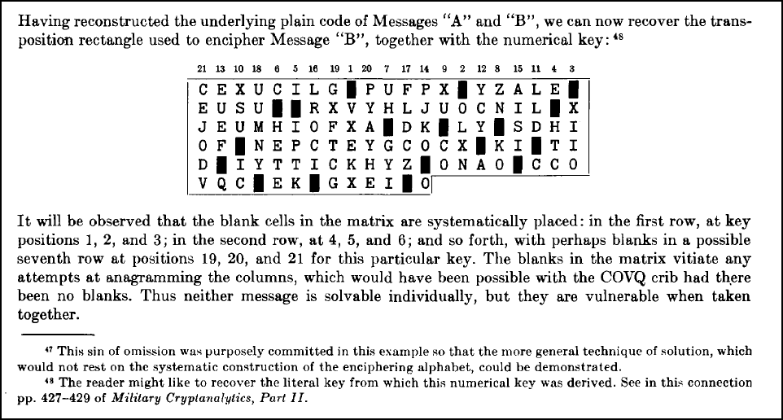

Matching a multi-word literal key
Our example is taken from Military Cryptanalytics, part III, page 307:

Although the example brought is a transposition matrix with blanks within, we are interested in the numerical key on top of the matrix:
21 13 10 18 6 5 16 19 1 20 7 17 14 9 2 12 8 15 11 4 3As we saw in Example 1, here is our plan:
First, enter the numerical key into the text box and click “Build table”:
Scroll down to use word matching to discover the literal key, specifying our English word list of choice. Now let’s decide the parameters for matching words to the numberical key. The numerical key has 21 values, so although there could be a single 21-letter word, let’s widen our net and assume the following:
Here is the word list matching filter:

By this time, the results should be in:

Looking in the section titled “Words and phrases filling the positions”, the first three are familiar to us:
By now we can guess the literal key: “UNITEST STATES OF AMERICA”. The reason our word matching did not find the correct literal key was our setting “words of at least” to three (3), while the literal key has the two-letter word “OF”. Changing the “words of at least” setting to two (2) results in:

Now is a good opportunity to look at the section titled “Longest words that fit anywhere”. The results listed here are long words that match a portion of the numerical key, not necessarily positioned at the beginning of the numerical key. Thus, we see 60 such words that match different positions. Had we not solved the literal key, we might have searched for hints within this result list, with “AMERICA” and “UNITED” standing out.
Because the numerical key was so long, to find the literal key requires a wider net. This was accomplished by searching for 1-5 words in the literal key. We set “words of at least” to three (3) to reduce run time and output noise. The literal key was apparent, even with “words of at least” set to three. Setting it to two (2) gave us the correct literal key.